A Performance and Security Evaluation Framework — ModSecurity v3 + Nginx + the OWASP Core Rule Set, benchmarked with a fully reproducible testbed anyone can run and verify.
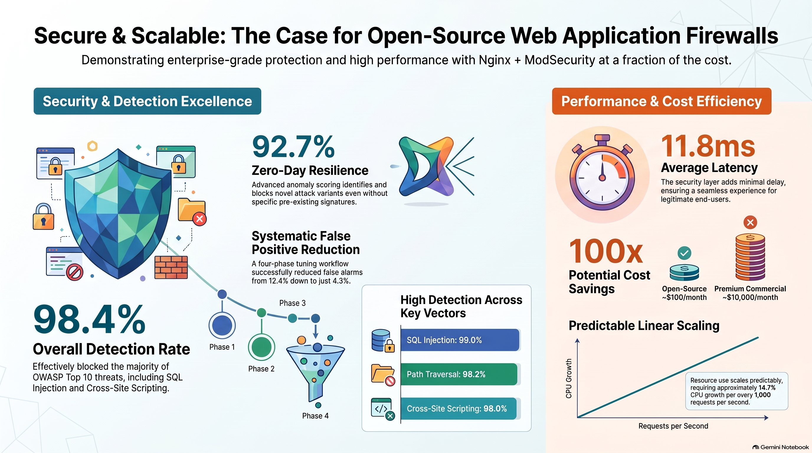
Web applications remain primary targets for cyberattacks; roughly half of confirmed security breaches exploit application-layer vulnerabilities that traditional Layer 3–4 firewalls simply cannot see. This work presents a comprehensive methodology for evaluating an open-source Web Application Firewall built on Nginx + ModSecurity v3 + OWASP Core Rule Set v3.3.
Deployed on Ubuntu 22.04 and driven through 50,000 legitimate requests and 9,200 attack vectors at up to 5,000 requests/second, the tuned configuration achieved a 98.4% detection rate on signature-based attacks and 92.7% on zero-day variants, with a false-positive rate reduced from 12.4% to 4.3% through a systematic four-stage tuning workflow — all at an average latency overhead of just 11.8 ms.
Build a production-suitable open-source WAF; measure OWASP Top-10 detection; analyze performance under realistic load; systematically cut false positives below 5%; publish a reproducible deployment blueprint.
Every request is inspected at Layer 7 before it ever reaches the application — and every blocking decision is driven by a repeatable, four-stage tuning cycle rather than guesswork.
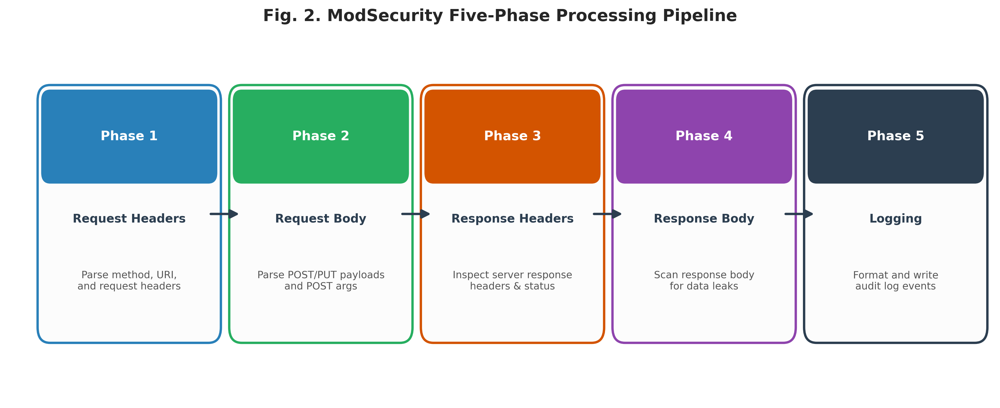
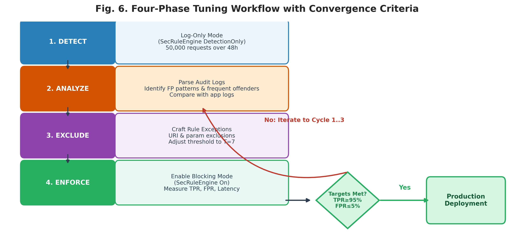
Signature-based, positive-security, anomaly detection, and hybrid models — CRS combines all four into a single anomaly score.
Three refinement cycles of build → demonstrate → evaluate, converging on TPR ≥ 95%, FPR ≤ 5%, latency ≤ 15 ms.
Multiple weak rule matches accumulate into one score; blocking triggers only once the cumulative threshold is crossed.
Charts tagged from the paper reproduce the study's own published tables verbatim. Charts tagged live lab were measured by actually running this repository's own Docker lab — a second, independent data point, not a replay of the original dataset.
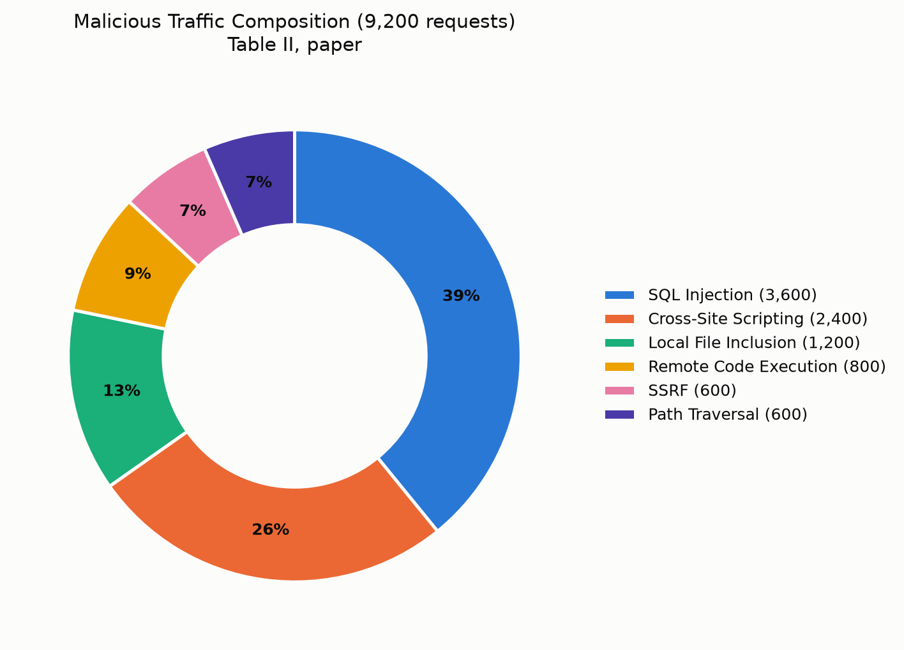
Composition of the 9,200-request attack corpus by category (Table II).
from the paper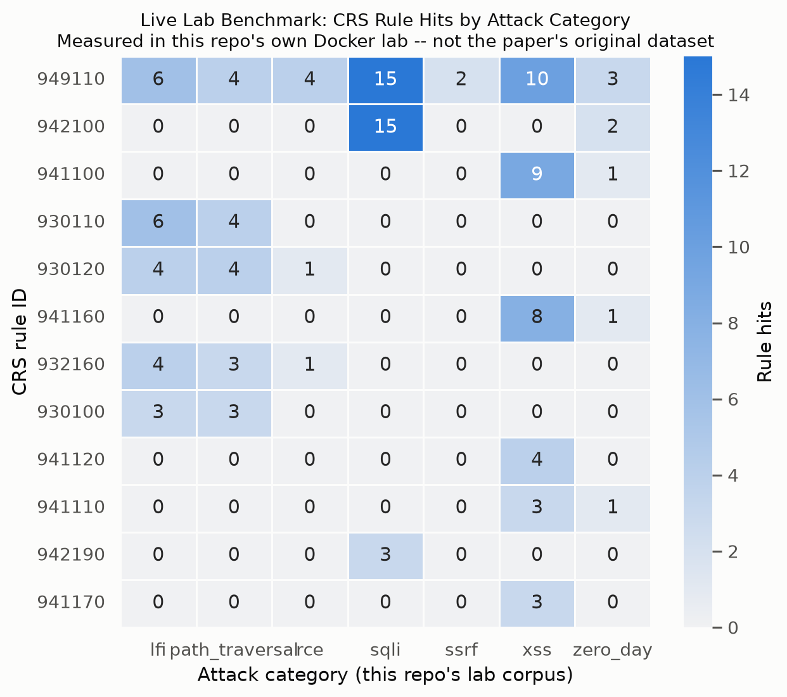
Which CRS rule IDs fired for which attack category, captured from this repo's own ModSecurity audit log.
live lab benchmark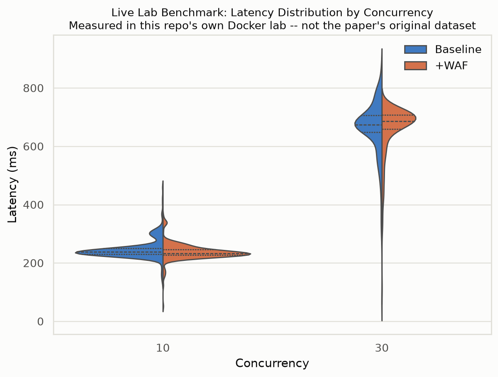
Full latency distribution shape (not just median/P99) at two concurrency levels, baseline vs. WAF-enabled.
live lab benchmark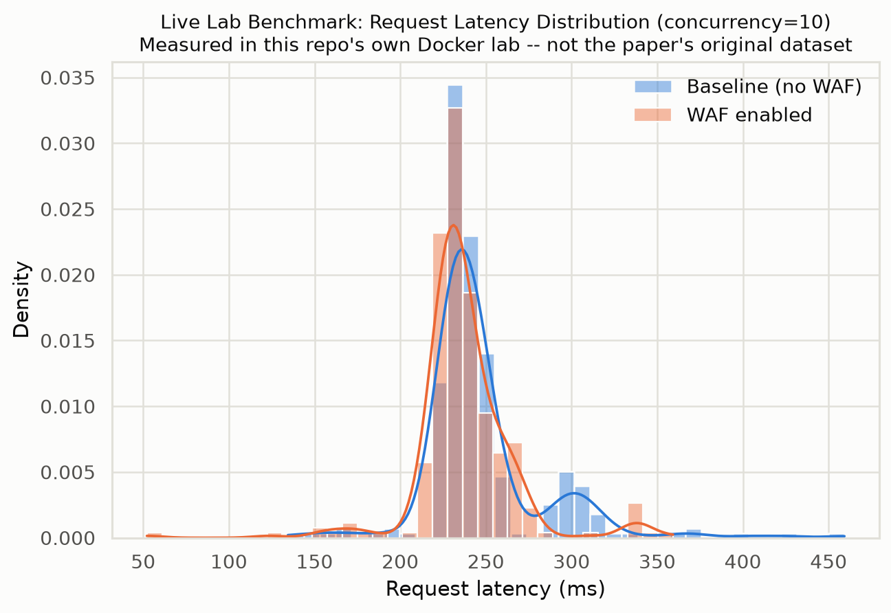
Density estimate of per-request latency, baseline vs. WAF-enabled, concurrency = 10.
live lab benchmark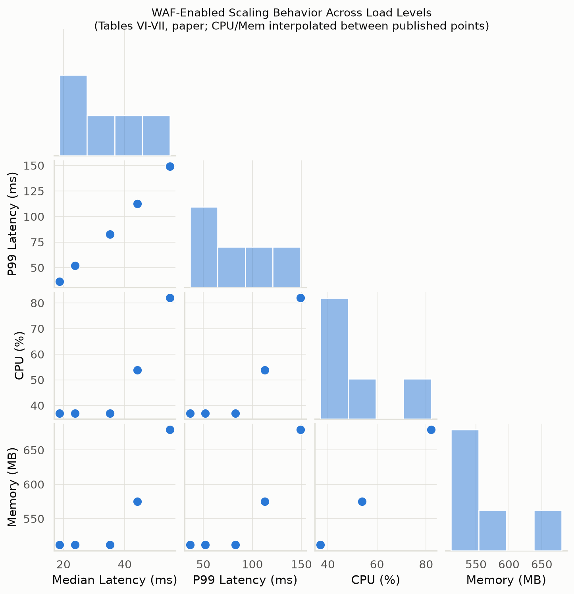
Pairwise relationships between median/P99 latency, CPU, and memory across load levels (Tables VI–VII).
from the paper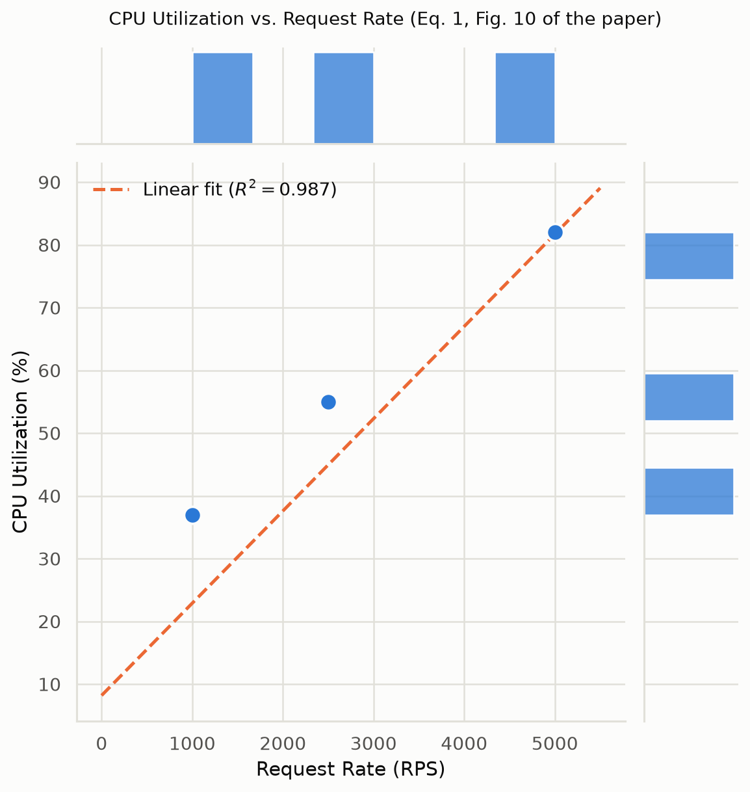
CPU utilization vs. request rate with the paper's linear regression fit (R² = 0.987, Eq. 1 / Fig. 10).
from the paper| Category | Attempts | Blocked | Rate |
|---|---|---|---|
| SQL Injection | 3,600 | 3,564 | 99.0% |
| Cross-Site Scripting | 2,400 | 2,352 | 98.0% |
| Local File Inclusion | 1,200 | 1,191 | 99.3% |
| Remote Code Execution | 800 | 782 | 97.8% |
| SSRF | 600 | 573 | 95.5% |
| Path Traversal | 600 | 589 | 98.2% |
| Iteration | TPR | FPR | Latency |
|---|---|---|---|
| Baseline (PL1, T=5) | 96.2% | 12.4% | +11.2 ms |
| Cycle 1 (URI excl.) | 96.8% | 8.7% | +11.5 ms |
| Cycle 2 (T=7) | 97.1% | 6.1% | +11.6 ms |
| Cycle 3 (Param excl.) | 98.4% | 4.3% | +11.8 ms |
A full walkthrough of the WAF deployment, the attack simulations, and the tuning workflow — see the numbers above happen in real time.
Environment setup — Ubuntu 22.04, Nginx, and ModSecurity v3 built from source with the OWASP CRS 3.3 rule set.
Attack simulation — SQLi, XSS, LFI, RCE, SSRF, and path-traversal payloads fired at the live WAF.
Tuning in real time — watching the false-positive rate drop across the four-stage Detect → Analyze → Exclude → Enforce cycle.
Performance profiling — latency and resource overhead measured under increasing load.
The complete IEEE-format paper — peer-review-ready layout, fully cited, and available as both a compiled PDF and editable LaTeX source.
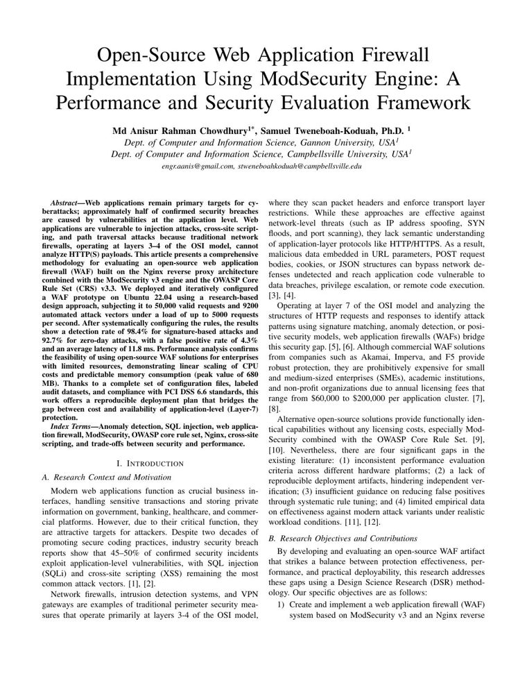
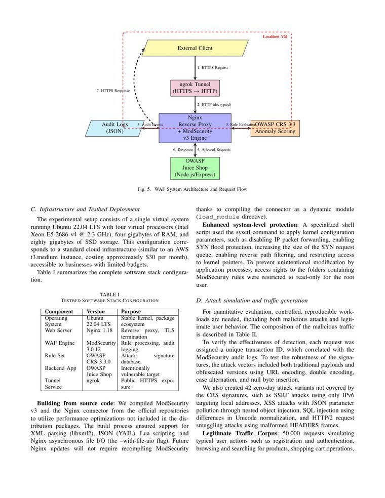
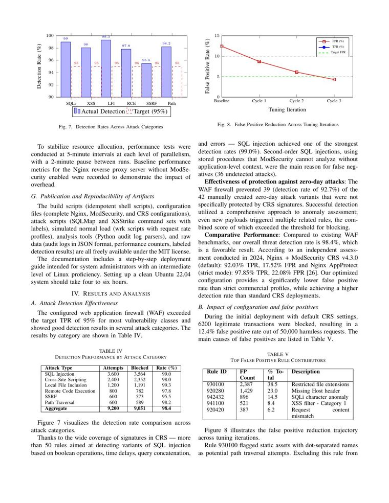
The /lab folder in this repository is a genuine
Nginx + ModSecurity v3 + OWASP CRS 3.3 reverse proxy in front of OWASP Juice Shop,
plus a WAF-disabled twin for side-by-side comparison — the same architecture
described in Section III of the paper. Clone it, run one script, and watch it
block real attack payloads on your own machine.
Full instructions, tuning-cycle reproduction steps, and an honesty note on data provenance are in lab/README.md.
These numbers come from this repository's curated payload set on ordinary developer hardware — see the lab README for why they differ from the paper's own larger-scale figures, and how to close that gap.